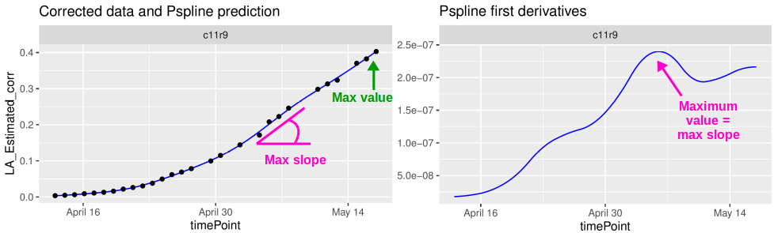
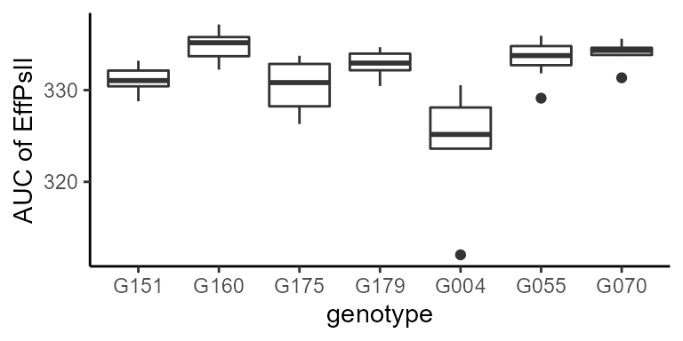
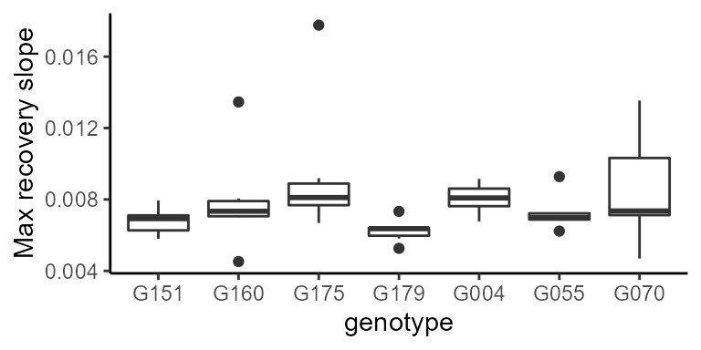
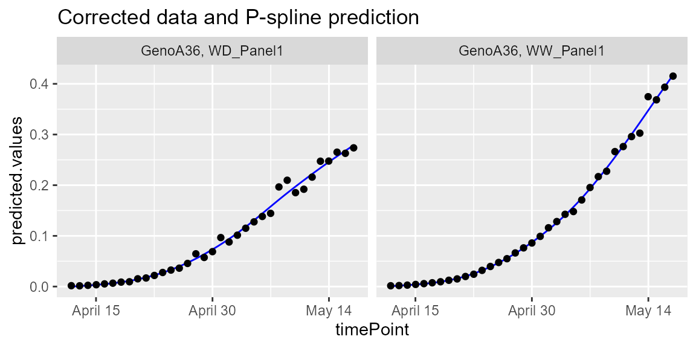
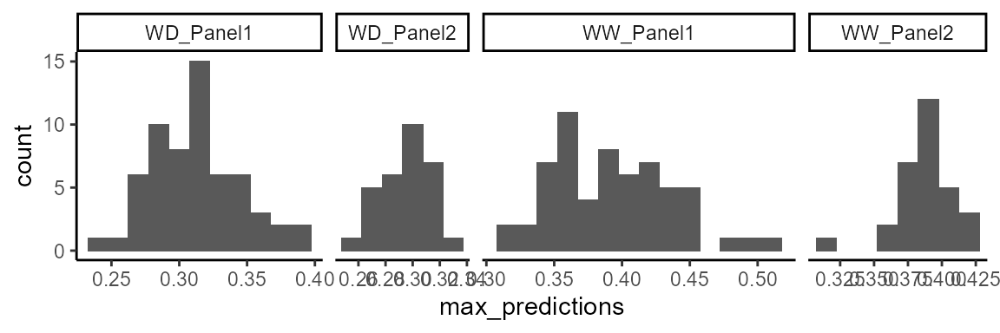
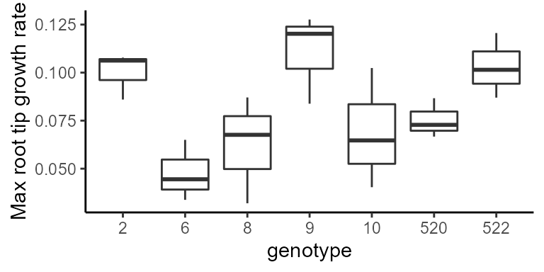

statgenHTP tutorial: 5. Estimation of parameters from time courses
Emilie Millet, Bart-Jan van Rossum, Martin Boer, Fred van Eeuwijk
2021-03-05
Source:vignettes/vignettesSite/ParameterEstimation_HTP.Rmd
ParameterEstimation_HTP.RmdIntroduction
This document presents the final step of the HTP data analysis: extracting interesting parameters from the modeled time courses (Brien et al. 2020). For example, in the second data set from the PhenoArch platform, the maximum leaf area (from the P-splines) or the maximum leaf growth rate (from the first derivatives) are relevant parameters (see figure below). We could assess their variability in the genotypes and the difference between treatments, e.g. has the water scenario decreased the maximum leaf area?

It is also possible to specify a period for the parameter estimation. For example, in the first data set from the Phenovator platform, we can select the period with the high light intensity (see figure below) and estimate the maximum slope during that period (from the first derivatives). This could be interpreted as a recovery rate of the photosystem II efficiency.

These parameters could then be further analyzed, for example in a GxE analysis (see statgenGxE), or a genetic analysis (see statgenGWAS).
The functions described in this tutorial can be applied to corrected data, genotypic means (BLUEs or BLUPS) (see statgenHTP tutorial: 3. Correction for spatial trends) or on raw data. It allows estimating maximum, minimum, mean, area under the curve (auc) or percentile using predicted values, first or second derivative, during a given period or for the whole time course.
Estimation of parameters from curves
Example 1
We will use the fit.splineNumOut previously created (see statgenHTP tutorial: 4. Outlier detection for series of observations). It contains the P-spline prediction on a subset of plants without the time course outliers. We will estimate the area under the curve of the trait:
subGenoVator <- c("G070", "G160", "G151", "G179", "G175", "G004", "G055")
paramVator1 <-
estimateSplineParameters(HTPSpline = fit.splineNumOut,
estimate = "predictions",
what = "AUC",
timeMin = 330,
timeMax = 432,
genotypes = subGenoVator)
ggplot(paramVator1, aes(x = genotype, y = AUC_predictions)) +
geom_boxplot(na.rm = TRUE) +
ylab("AUC of EffPsII") +
theme_classic()
For this subset of genotypes, there is a variability in AUC of the psII efficiency. This could be used in genetic analysis and maybe to perform a GWAS.
Another example is using the derivative during the recovery period (at the end of the time course, so after the light change) to get the maximum slope, or the maximum rate of the psII per time unit during this period.
paramVator2 <-
estimateSplineParameters(HTPSpline = fit.splineNumOut,
estimate = "derivatives",
what = "max",
timeMin = 210,
timeMax = 312,
genotypes = subGenoVator)
ggplot(paramVator2, aes(x = genotype, y = max_derivatives)) +
geom_boxplot(na.rm = TRUE) +
ylab("Max recovery slope") +
theme_classic()
Note: when “min” or “max” is selected, the output also contains the parameter occurence time point, as numerical
timeNumberand datetimePoint. See in the table below:
| genotype | plotId | max_derivatives | max_timeNumber | max_timePoint |
|---|---|---|---|---|
| G004 | c11r55 | 0.0067723 | 227.7778 | 2018-06-10 04:23:40 |
| G004 | c13r20 | 0.0084969 | 226.0000 | 2018-06-10 02:37:00 |
| G004 | c19r15 | 0.0073180 | 232.0000 | 2018-06-10 08:37:00 |
| G004 | c21r45 | 0.0091551 | 223.3333 | 2018-06-09 23:57:00 |
| G004 | c24r48 | 0.0080869 | 224.2222 | 2018-06-10 00:50:20 |
| G004 | c2r15 | 0.0079296 | 226.0000 | 2018-06-10 02:37:00 |
Example 2
For this example, we will use the genotypic prediction (BLUPs, see statgenHTP tutorial: 3. Correction for spatial trends) available in the spatPredArch data set. We will fit P-splines at the genotypic level using the geno.decomp levels defined in the spatial model.
data(spatPredArch)
fit.splineGenoArch <- fitSpline(inDat = spatPredArch,
trait = "predicted.values",
knots = 15,
minNoTP = 18)
plot(fit.splineGenoArch,
genotypes = "GenoA36")
We can estimate the maximum value of the leaf area from the predicted P-splines:
paramArch1 <-
estimateSplineParameters(HTPSpline = fit.splineGenoArch,
estimate = "predictions",
what = "max")
ggplot(paramArch1, aes(max_predictions)) +
geom_histogram(binwidth = 0.015) +
theme_classic() +
facet_grid(. ~ geno.decomp, scales="free_x",space = "free_x")
Example 3
For this example, we will use the raw data from the RootPhAir, corrected for individually outlying observations (see statgenHTP tutorial: 2. Outlier detection for single observations) and time course outliers (see statgenHTP tutorial: 4. Outlier detection Time course). We will fit P-splines at the plant level on a subset of genotypes.
subGenoRoot <- c( "2","6","8","9","10","520","522")
fit.splineRootOut <- fitSpline(inDat = noCorrectedRootOut,
trait = "tipPos_y",
knots = 10,
genotypes = subGenoRoot,
minNoTP = 0,
useTimeNumber = TRUE,
timeNumber = "thermalTime")We will then estimate the mean growth rate using what = "mean" for the subset of genotypes:
paramRoot1 <-
estimateSplineParameters(HTPSpline = fit.splineRootOut,
estimate = "derivatives",
what = "mean")
ggplot(paramRoot1, aes(x = as.factor(genotype), y = mean_derivatives)) +
geom_boxplot(na.rm = TRUE) +
ylab("Max root tip growth rate") +
xlab("genotype") +
theme_classic()